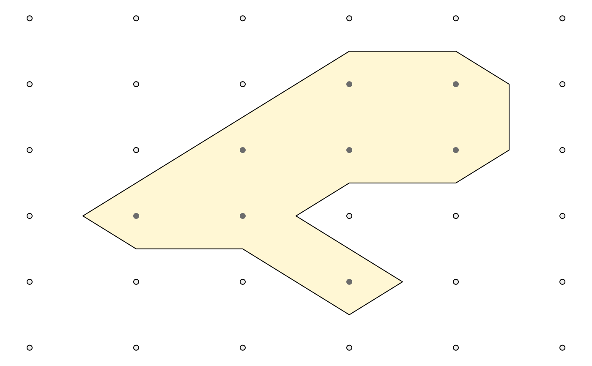
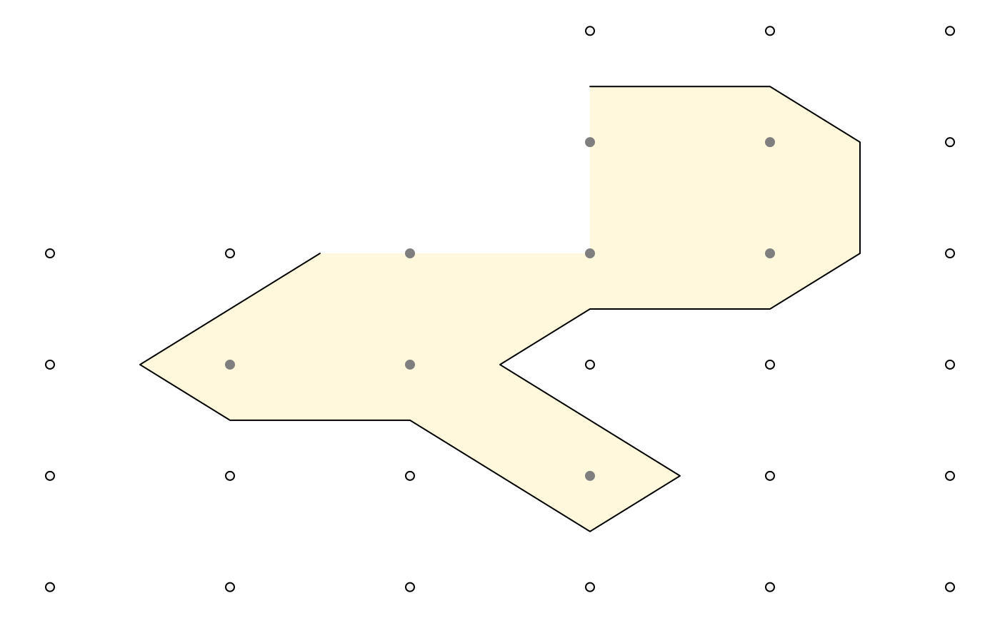
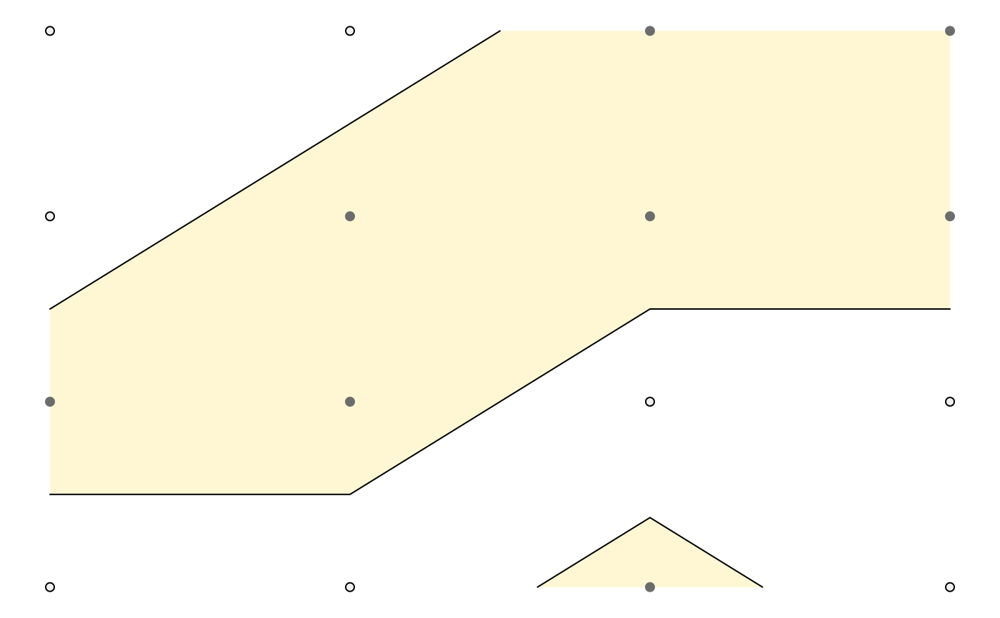
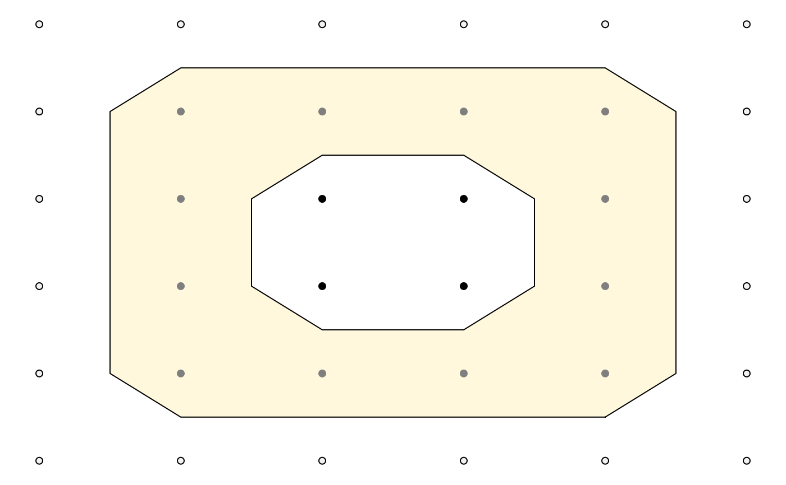

Efficient calculation of isolines and isobands from elevation grid
isobands(x, y, z, levels_low, levels_high) isolines(x, y, z, levels)
Arguments
| x | Numeric vector specifying the x locations of the grid points. |
|---|---|
| y | Numeric vector specifying the y locations of the grid points. |
| z | Numeric matrix specifying the elevation values for each grid point. |
| levels_low, levels_high | Numeric vectors of minimum/maximum z values
for which isobands should be generated. Any z values that are exactly
equal to a value in |
| levels | Numeric vector of z values for which isolines should be generated. |
See also
Examples
library(grid) #' # one simple connected shape m <- matrix(c(0, 0, 0, 0, 0, 0, 0, 0, 0, 1, 1, 0, 0, 0, 1, 1, 1, 0, 0, 1, 1, 0, 0, 0, 0, 0, 0, 1, 0, 0, 0, 0, 0, 0, 0, 0), 6, 6, byrow = TRUE) df_bands <- isobands((1:ncol(m))/(ncol(m)+1), (nrow(m):1)/(nrow(m)+1), m, 0.5, 1.5)[[1]] df_lines <- isolines((1:ncol(m))/(ncol(m)+1), (nrow(m):1)/(nrow(m)+1), m, 0.5)[[1]] g <- expand.grid(x = (1:ncol(m))/(ncol(m)+1), y = (nrow(m):1)/(nrow(m)+1)) grid.newpage() grid.points(g$x, g$y, default.units = "npc", pch = 19, size = unit(0.5, "char"))# a similar plot can be generated with the plot_iso() function, # which is useful for exploring how the algorithm works plot_iso(m, 0.5, 1.5)# NAs are ignored m <- matrix(c(NA, NA, NA, 0, 0, 0, NA, NA, NA, 1, 1, 0, 0, 0, 1, 1, 1, 0, 0, 1, 1, 0, 0, 0, 0, 0, 0, 1, 0, 0, 0, 0, 0, 0, 0, 0), 6, 6, byrow = TRUE) plot_iso(m, 0.5, 1.5)# two separate shapes m <- matrix(c(0, 0, 1, 1, 0, 1, 1, 1, 1, 1, 0, 0, 0, 0, 0.8, 0), 4, 4, byrow = TRUE) plot_iso(m, 0.5, 1.5)# shape with hole m <- matrix(c(0, 0, 0, 0, 0, 0, 0, 1, 1, 1, 1, 0, 0, 1, 2, 2, 1, 0, 0, 1, 2, 2, 1, 0, 0, 1, 1, 1, 1, 0, 0, 0, 0, 0, 0, 0), 6, 6, byrow = TRUE) plot_iso(m, 0.5, 1.5)